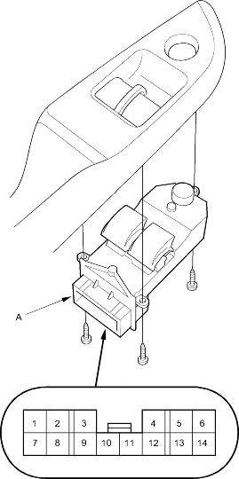
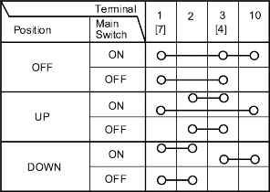

- Remove the screw and the power window master switch (A) from the door panel.

- Disconnect the 14P connector (B) from the switch.
- Check for continuity between the terminals in each switch position according to the table.
Driver's Switch:
The driver's switch is combined with the control unit so you cannot isolate the switch to test it. Instead, run the master switch input test procedures on page 22-36. If the tests are normal, the driver's switch must be faulty.

- If the switch is faulty, remove the two screws and replace the switch.